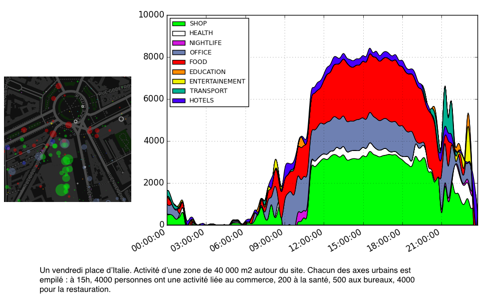
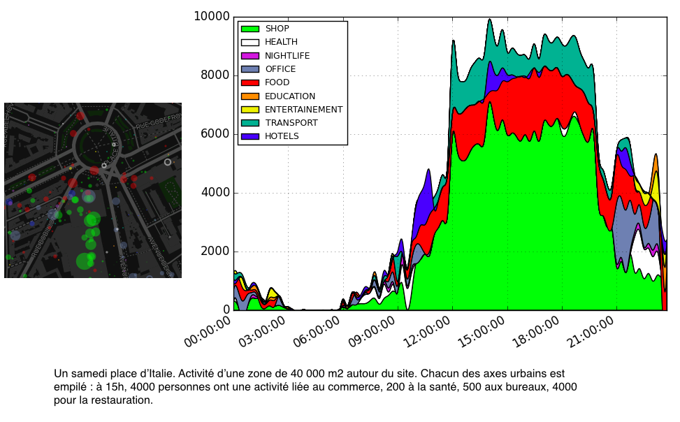
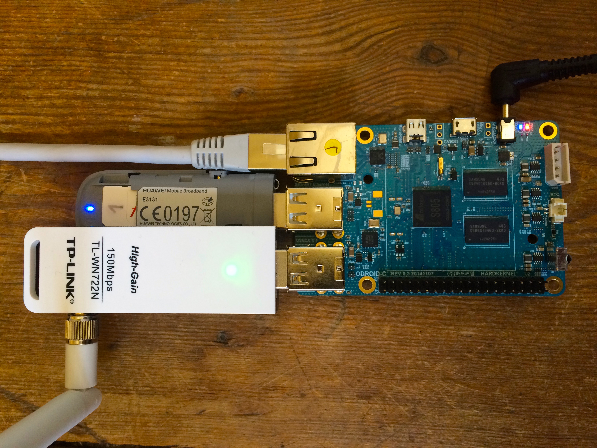
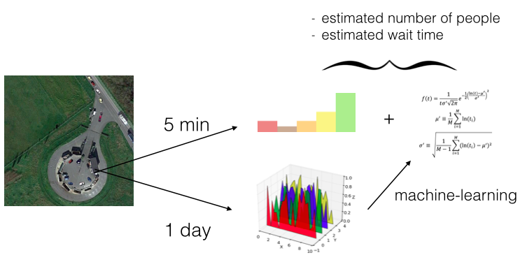

IoT and ML for
urban mobility
ANTS - Open Innovation Lab
Contextual modeling

Contextual modeling

Access to infrastructure
Electromagnetic counting

Privacy

http://ants.builders
twitter: @vallettea